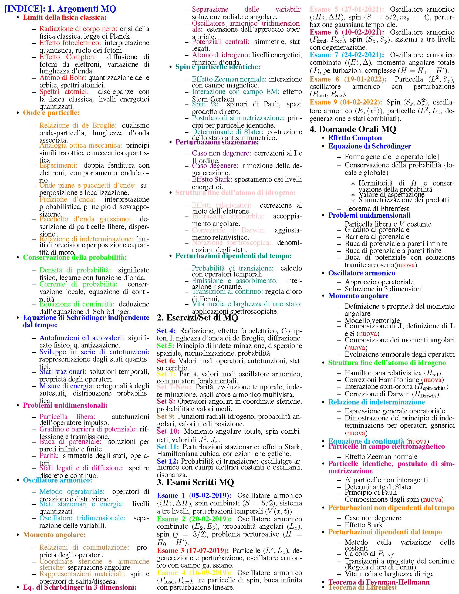

Indice Completo (Formato Immagine)

1.Argomenti di Meccanica Quantistica
| 1. Limiti della fisica classica: | 8. Eq. di Schrödinger in 3 dimensioni: |
2. Onde e particelle:
|
9. Spin: |
| 3. Eq. di Schrödinger indipendente dal tempo: | 10. Particelle identiche: |
| 4. Problemi unidimensionali: | 11. Composizione di momenti angolari: |
| 5. Operatori e spazi vettoriali: | 12. Perturbazioni stazionarie: |
| 6. Postulati della meccanica quantistica: | 13. Struttura fine dell’atomo di idrogeno: |
| 7. Momento angolare: | 14. Perturbazioni dipendenti dal tempo: |
2. Esercizi/Set di MQ
- Set 4: Radiazione, effetto fotoelettrico, Compton, ...
- Set 5: Principio di indeterminazione, ...
- Set 6: Valori medi operatori, autofunzioni, ...
- Set 7: Parità, valori medi oscillatore armonico, ...
- Set 7-New: Parità, evoluzione temporale, ...
- Set 8: Operatori angolari in coordinate sferiche, ...
- Set 9: Funzioni radiali idrogeno, probabilità ...
- Set 10: Momento angolare totale, spin combinati, ...
- Set 11: Perturbazioni stazionarie: effetto Stark, ...
- Set 12: Probabilità di transizione: oscillatore armonico ...
3. Esami Scritti MQ
- Esame 1 (05-02-2019): Oscillatore armonico, spin combinati, ...
- Esame 2 (20-02-2019): Oscillatore armonico combinato, ...
- Esame 3 (17-07-2019): Particelle (L^2, L_z), degenerazione e perturbazione ...
- Esame 4 (16-09-2019): Oscillatore armonico, tre particelle di spin, ...
- Esame 5 (27-01-2021): Oscillatore armonico, spin (S=5/2), perturbazione gaussiana ...
- Esame 6 (10-02-2021): Oscillatore armonico, spin (S_x, S_y), sistema a tre livelli ...
- Esame 7 (24-02-2021): Oscillatore armonico combinato, momento angolare totale, ...
- Esame 8 (19-01-2022): Particella (L^2, S_z), oscillatore armonico con perturbazione ...
- Esame 9 (04-02-2022): Spin (S_z), oscillatore armonico (E,
4. Domande Orali MQ
- Effetto Compton
- Equazione di Schrödinger:
- Forma generale [e operatoriale]
- Conservazione della probabilità (locale e globale)
- Hermiticità di \( H \) e conservazione della probabilità
- Valore di aspettazione
- Simmetrizzazione dei prodotti
- Teorema di Ehrenfest
- Soluzione dell’equazione di Schrödinger:
- Stati stazionari
- Proprietà autofunzioni dell’energia
- Problemi unidimensionali:
- Particella libera o \( V \) costante
- Gradino di potenziale
- Barriera di potenziale
- Buca di potenziale a pareti infinite
- Buca di potenziale a pareti finite
- Oscillatore armonico operatoriale
- Postulati della meccanica quantistica
- Osservabili compatibili (caso degenere e non degenere)
- Relazione di indeterminazione:
- Espressione generale operatoriale
- Stato con indeterminazione minima
- Momento angolare:
- Momento angolare \( L_x, L_y, L_+, L_- \)
- Modello vettoriale
- Evoluzione temporale degli operatori
- Equazione di Schrödinger in 3 dimensioni
- Oscillatore armonico in 3 dimensioni
- Potenziale centrale, soluzione con \( u = R r \)
- Struttura fine dell’atomo di idrogeno:
- Hamiltoniana relativistica \( H_{\text{rel}} \)
- Correzioni Hamiltoniane
- Interazione spin-orbita \( H_{\text{spin-orbita}} \)
- Correzione di Darwin \( H_{\text{Darwin}} \)
- Composizione dei momenti angolari
- Particelle identiche e postulato di simmetrizzazione
- N particelle non interagenti, determinante di Slater, principio di Pauli
- Perturbazioni non dipendenti dal tempo:
- Caso non degenere
- Effetto Stark
- Perturbazioni dipendenti dal tempo:
- Metodo della variazione delle costanti
- Perturbazione periodica
- Transizioni a uno stato del continuo (Regola d'oro di Fermi)
- Probabilità che lo stato rimanga invariato, vita media, larghezza di riga
- Effetto Zeeman normale
- Teorema di Feynman-Hellmann
Riordina Domande Orali MQ
Gli argomenti sono stati ordinati inizialmente in base alla loro struttura tematica. È possibile riordinarli utilizzando una delle seguenti metriche:
- Percentuale: Riordina in base alla frequenza stimata dell'argomento
- Dettaglio: Riordina in base alla lunghezza descrittiva
- Alfabetico: Riordina in ordine alfabetico
- Casuale: Riordina in modo casuale
Seleziona un criterio di riordinamento: